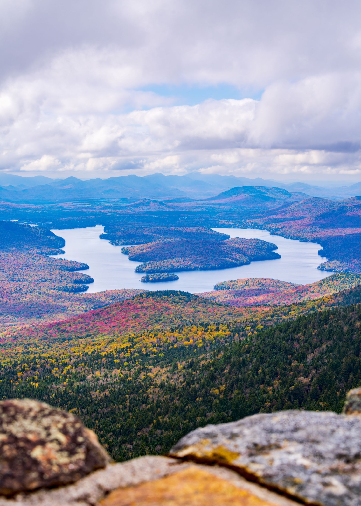
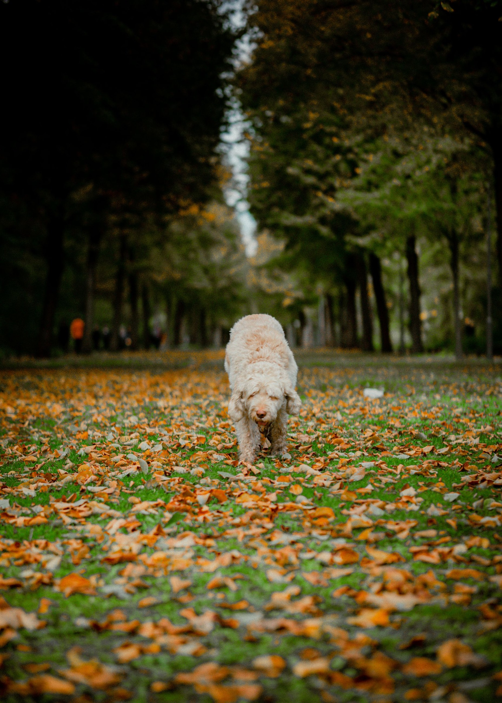

✳ PHOTOGRAPHY WITH A SENSE OF PLACE
Good days.
Kept forever.
For the people you love.
The places you belong.
And this fleeting, beautiful season.

A little closer to what matters.THE AUTUMN EDITTake the
scenic route.
ROOTED IN LAKE GEORGE
Some moments don’t
ask for much. Just a little attention.
Cool air off the water. The sound of leaves underfoot. Your favorite people, exactly as they are. Northlake is a photography concept shaped by the quieter side of the Adirondacks — and the everyday stories worth remembering.
Get to know the approachTHE THINGS WORTH KEEPING
Life, in all
its lovely forms.
Six ways to tell your story.
One thoughtful, unhurried approach.
THIS PLACE. THIS TIME OF YEAR.
A softer pace.
A warmer kind
of color.
There is something about an autumn day by the lake. Pull on a favorite sweater, bring the people you love, and leave a little room to wander.
Our session guide makes the planning part simple, from choosing a setting to feeling comfortable in front of the camera.
The autumn session guideLakeside mornings · Woodland afternoonsSIMPLE FROM THE START
A good photograph begins
with feeling at ease.
Tell us your story
The people, the place, and what you hope to remember. We start by listening.
Make a little room
We choose a setting, talk through the details, and leave space for real life.
Keep what matters
A considered digital collection that feels like the day, and like you.
COME AS YOU ARE
Less posing.
More being here.
You don’t need a perfectly behaved dog, perfectly coordinated outfits, or a perfectly planned day. Just a little time together.
Explore family sessions